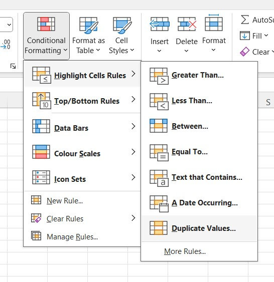
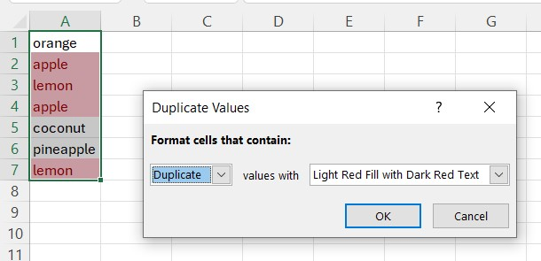

Highlighting duplicate values without formulas
Conditional formatting, Remove Duplicates and what to do when you need to see which rows match.
Duplicates in a customer list, invoice register or a list of IDs can lead to double payments and wrong totals. Before deleting anything it helps to see them.
Conditional formatting
Select the column, then Home → Conditional Formatting → Highlight Cells Rules → Duplicate Values. Every value that occurs more than once gets a colour. It updates automatically when you edit the data.


Keep in mind:
- The comparison is case-insensitive:
abcandABCcount as the same value. - Trailing spaces make values different. Clean the text first (see removing extra spaces).
- Numbers longer than 15 digits (card numbers, long IDs) are compared only by their first 15 digits, so Excel can flag values that differ in the last digits. For such columns use a formula rule with an exact comparison, for example
=SUMPRODUCT(--($A$2:$A$1000=$A2))>1.
Duplicates over several columns
If a duplicate means the same combination of, for example, name and date, the built-in rule is not enough. Use a formula-based rule:
=COUNTIFS($A$2:$A$1000,$A2,$B$2:$B$1000,$B2)>1
and apply it to the whole table.
Remove Duplicates
Data → Remove Duplicates deletes the repeated rows and keeps the first one. It can compare on selected columns only. There is no undo outside of Ctrl+Z right after, so work on a copy of the data.
Marking, not deleting
A helper column with =COUNTIF($A$2:$A2,A2) gives 1 for the first occurrence, 2 for the second and so on. Filter on values greater than 1 to see only the repeated rows, or leave the first occurrences alone and review the rest.
With the add-in
Highlight Duplications colours the repeated values in the selected range, and each group of identical values gets its own colour. That makes it easy to see which rows belong together, which a single colour from conditional formatting does not show. The highlight is plain cell formatting, so it does not slow down the workbook.
The add-in command for this: Highlight Duplications.